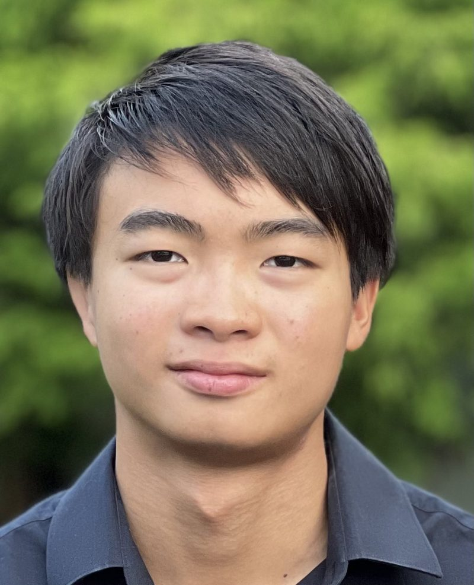

Benjamin
Reyes
I study Electrical and Computer Engineering at Cornell. I'm interested in digital signal processing and its biomedical applications. Outside of engineering, I play violin, box, and read philosophy.
A bowed violin string moves in a near-sawtooth shape. Each harmonic you add is one more sine wave in its Fourier series; the ripple that never goes away at the sharp edge is the Gibbs phenomenon.

I'm graduating soon and looking for a full‑time engineering role.
Projects
Contact
I'm happy to talk about research, projects, or internships. Email is the best way to reach me.
btreyes@live.com